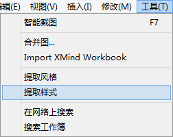
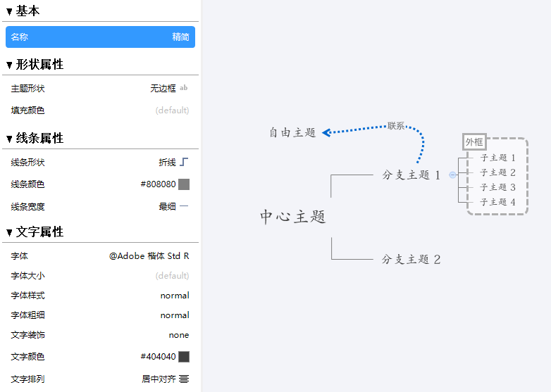
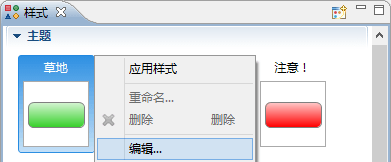

样式在XMind中是指图中某个主体的一系列设置配置的组合，譬如颜色，形状，大小等等。XMind专业版允许用户自己设计样式并提取。这样就可以 反复使用。XMind 2013则带来了样式编辑器，一个帮助您更好更直观地设计样式的工具。
提取并设计
- 选择一个主体（主题，联系线，外框或者 画布）
- 从菜单选择"工具 -- 提取样式"
 - 设计这个主体的配置
- 主题: 命名，形状，线条的颜色/形状，文字的大小/字体/其他特性
- 联系线: 命名，形状，线条的颜色/形状，文字的大小/字体/其他特性
- 外框: 命名，形状，线条的颜色/形状，文字的大小/字体/其他特性
- 画布: 命名，背景色，彩虹色线条，线条渐进变粗
- 点击保存即可

设计已经存在的样式
- 打开样式视图“视图 -- 样式”
- 选择一个视图，右击然后选择“编辑”
- 修改属性并保存
